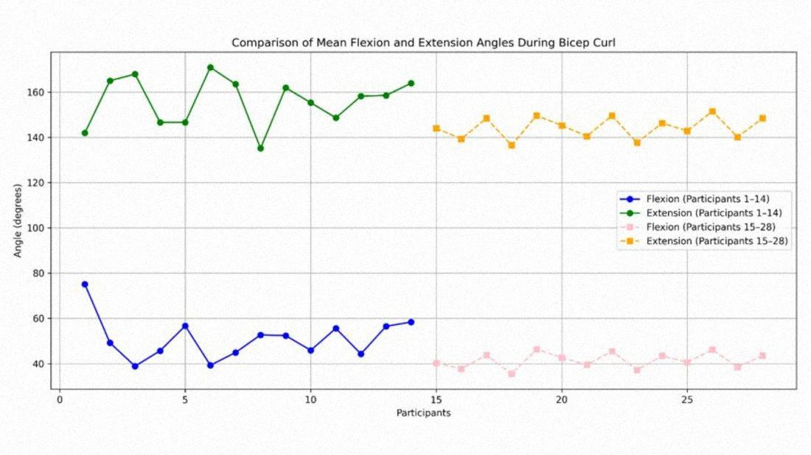
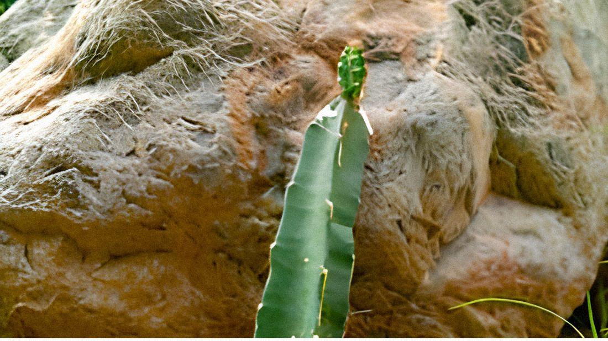
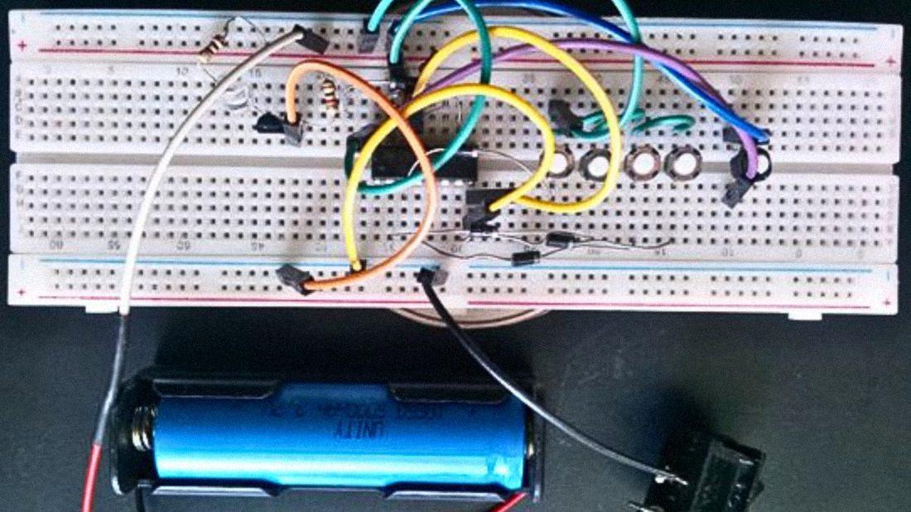
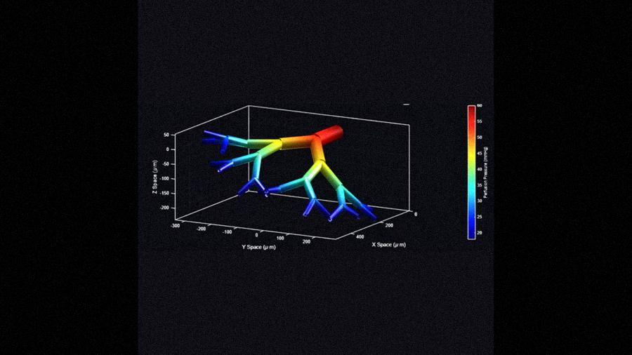
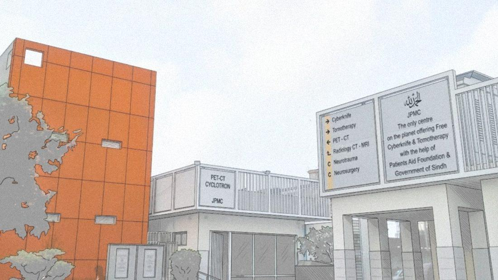
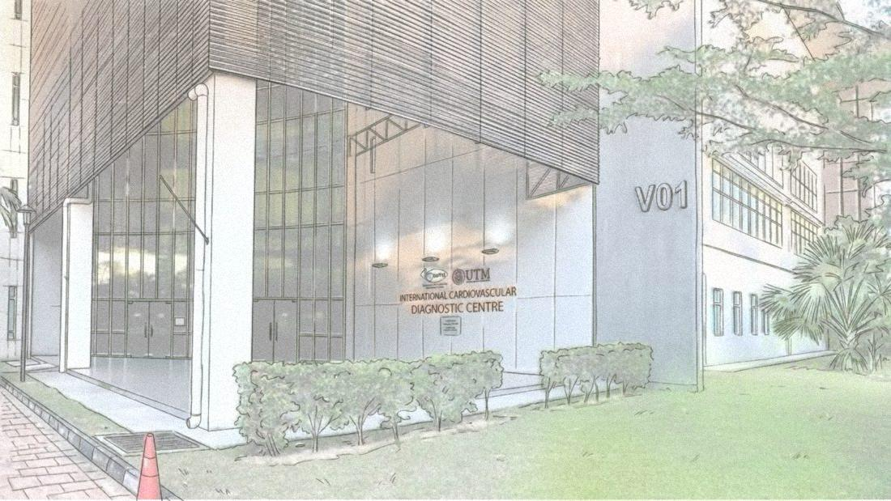
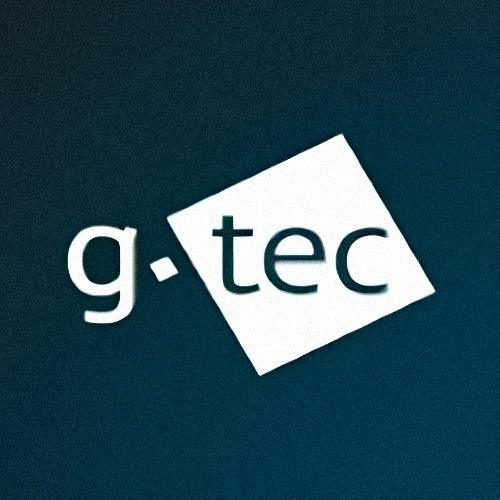
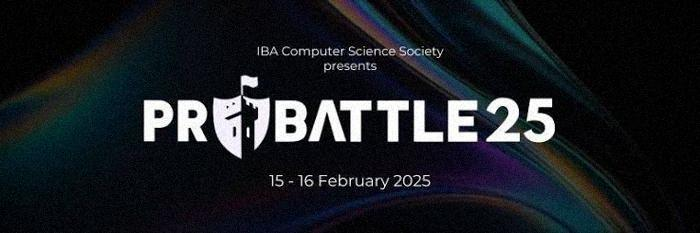
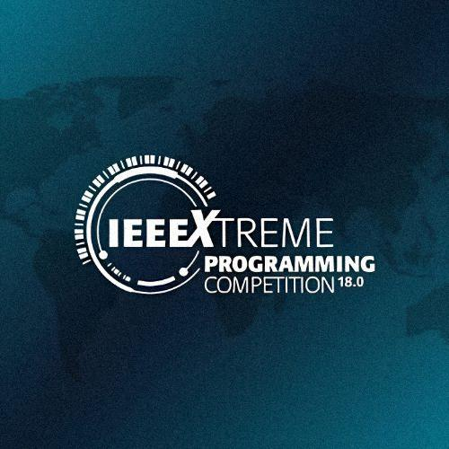

Biomedical Engineering
Received formal education as a student of Bachelor of Engineering, Biomedical Engineering at Ziauddin University. CGPA: 3.82 | 2023 - 2027 (expected)
MATLABCOMSOL MultiphysicsPythonC#CUnityGodotSOLIDWORKSArduinoKinoveaMultiSimNI ElvisMaterials StudioFigmaFlutterFlow
Course Projects

Analysis of Postural and Gait Deviations During Bicep Curl Exercise Among Gym Trainees
Course project | Kinovea
Gym trainees were video-recorded from several angles while performing bicep curls, and joint movement was analysed in Kinovea. Common deviations were excessive trunk sway, shoulder elevation, wrist flexion and asymmetrical elbow motion. Keeping a neutral spine and controlling elbow flexion may improve exercise safety.
Read on the blog →
Plant Growth Report
Course project | Community and Civics Engagement
A dragon fruit cactus planted on 13 August 2025 in Gadap was tracked weekly for the first month and monthly over three months, with the aim of increasing greenery in the community area.
Read on the blog →
4-Digit Electronic Code Lock System
Course project | Digital Logic Design
A lock that opens only when the correct four-digit sequence is entered through push buttons, lighting an LED or relay to show access. Built from basic digital logic components and tested on a breadboard.
Read on the blog →
Multiscale modelling of 3D microvascular geometries
Course project | Signals and Systems, 2026
A computational study of blood perfusion through microvascular networks.
Read on the blog →Internships

Biomedical Engineering Intern at Jinnah Postgraduate Medical Centre, Karachi, Pakistan
2026
Understood the working principles, operations, and treatment procedures in CyberKnife S7, CyberKnife VSI, and Tomotherapy X9 by Accuray. Closely observed error occurrence, troubleshooting methodologies and error handling with service engineers. Expansive study on medical devices in Robotic surgery, ICU, HDU, ENT OT, PET, Radiology, Diagnostic Laboratories, Blood Bank and Neurotrauma departments.

Research Intern at UTM-IJN, Malaysia
July 2026
Worked under an Associate Professor in the Department of Biomedical Engineering and Health Sciences at Universiti Teknologi Malaysia (UTM), on a research project regarding XAI for diagnostics of oral cancer.
Competitions & Hackathons

BR4IN.io by g.tec Medical Engineering Austria
2026
Participated in Brain-Computer Interface Hackathon 2026. Project: P300 Data Analysis for a P300 Speller. Data was collected from five healthy subjects (S1–S5) using the Unicorn Brain Interface (8 channels, 250 Hz). Worked with a group of professionals from Italy and France.

Pro Battle'25 by IBA Karachi
2025
Built a fully functional LFR (Line Following Robot) using servo motors, Arduino UNO and a LiPo battery.

IEEEXtreme 18.0
2024
Worked along 2 other team members to solve complex programming problems for a duration of 24 hours.
Certifications
- Regenerative Medicine and Stem Cell Conference (RSC 2026)
By Accreditation Council for Continuing Medical Education (ACCME) - BR4IN.io Spring School | 130 hours awarded
By g.tec Medical Engineering, Austria - Materials: Modeling and Simulations Using Materials Studio | 2024
By BME Dept. SSUET, IEEE EMBS SSUET, BIOMED 5.0 Project - Use, Care & Maintenance of Scientific & Laboratory Instruments | 2024
By Government of Pakistan Ministry of Science & Technology, PCSIR Laboratories Complex